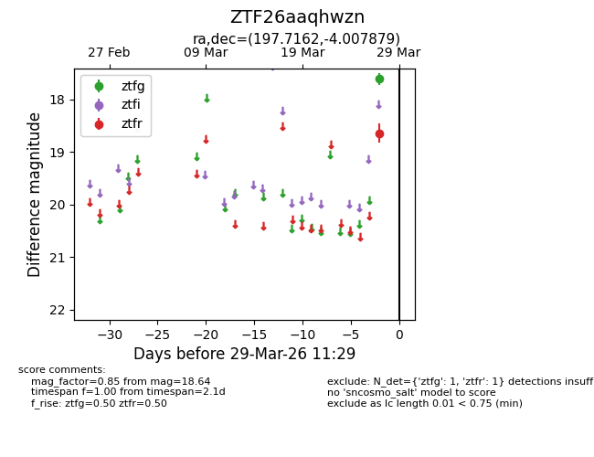
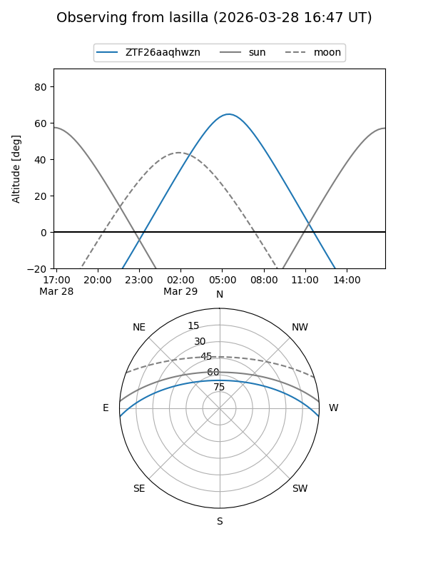
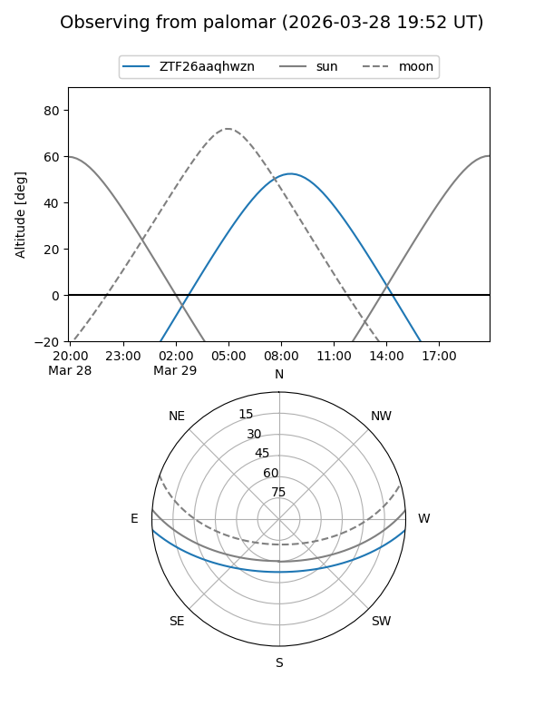

ZTF26aaqhwzn
Target ZTF26aaqhwzn at 2026-03-29 11:31
Aliases and brokers:
FINK: link
Lasair: link
ALeRCE: link
alt names
ZTF26aaqhwzn (ztf,fink_ztf)
Coordinates:
equatorial (ra, dec) = 197.7162,-4.00788
equatorial (HMS+DMS) = 13:10:51.88,-04:00:28.36
galactic (l, b) = (312.2373,+58.51244)
Flags:
Photometry:
last ztfg=17.61, ztfr=18.64
1 ztfg, 1 ztfr detections
Lightcurve

Visibility


Additional plots